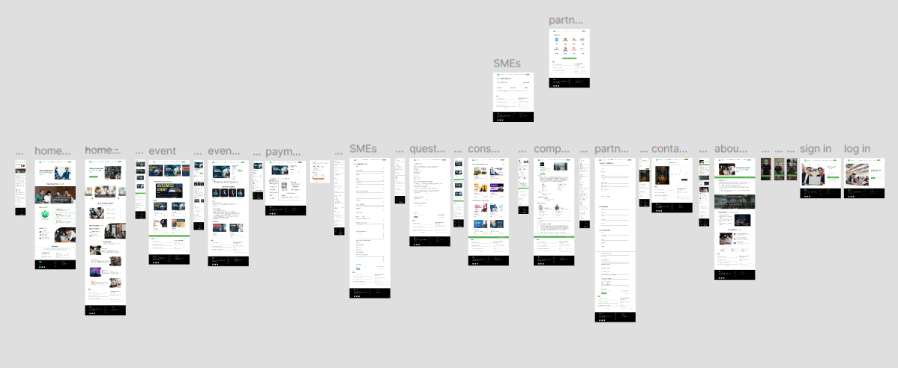
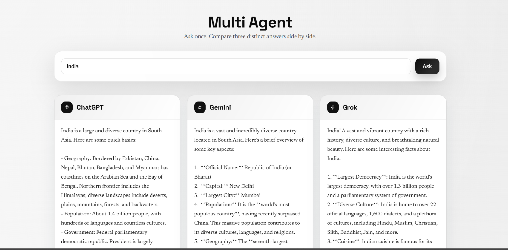
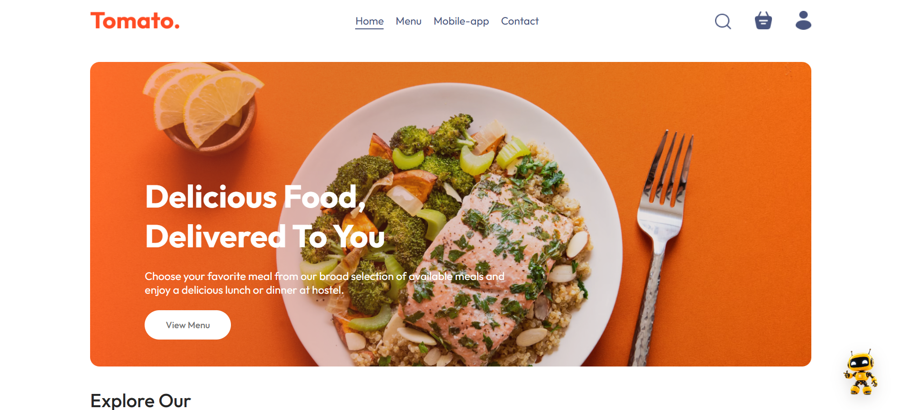
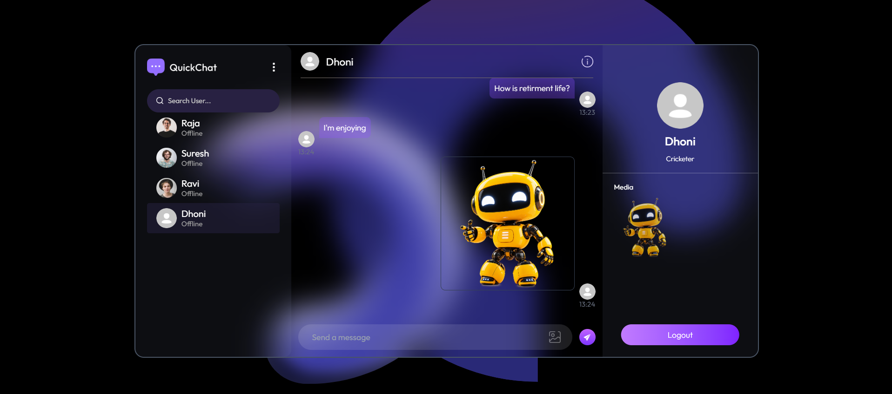

01 / CURRENT PROJECT

IN DEVELOPMENTFOUNDER & LEAD PRODUCT ENGINEER
PHARMACY OPERATIONS & AI↗
Venwave
My current product: a pharmacy operating system combining inventory, billing, and agentic AI workflows.
Visit VenwaveFounder @ Venwave · Hyderabad, India
I build production-ready software, from full-stack product architecture to AI automation. At Venwave, I turn complex pharmacy operations into intelligent systems.
Building, exploring, shipping
I like problems with real users, messy edges, and room to build something better.
01 / CURRENT PROJECT
My current product: a pharmacy operating system combining inventory, billing, and agentic AI workflows.
Visit Venwave02 / STARTUP PROTOTYPE

A multi-page concept exploring an experience for events, SMEs, payments, consulting, partners, and company information.
Other selected work
More shipped products and personal builds across AI, full-stack development, and applied machine learning.

An orchestration system coordinating agents for task decomposition, context retrieval, and decision-making, with RAG pipelines for grounded answers. JavaScript · Node.js · LLM APIs.

A responsive ordering app with authentication, dynamic menu filtering, real-time order updates, cart management, and Stripe checkout. React · Node.js · Express · MongoDB.

A real-time web app with Socket.IO messaging, direct file sharing, and WebRTC video. React · Node.js · Express · MongoDB.

A decision platform that predicts material suitability from mechanical properties, structural integrity, and weight inputs. Python · Flask · ML · React.
A responsive guide to tourist destinations, historical sites, and local travel insights across Hyderabad. HTML · CSS · JavaScript.
Other projects span agentic AI, full-stack products, applied machine learning, and responsive web experiences.
Featured build · Founder & Lead Product Engineer
Venwave is a cloud-native pharmacy operating system and agentic AI workflow engine. It addresses manual inventory management, slow POS billing, and inefficient batch tracking that create financial leakage and operational bottlenecks for traditional retail pharmacies.
450,000+ searchable medicines
Batch-level FEFO tracking
Vendor bills, WhatsApp orders & store queries
Engineering & product methodology
HOW I BUILD PRODUCTSI connect real-world signals to thoughtful system design, then ship and refine against actual usage. Each stage informs the next.
Identify structural problems in existing workflows instead of building for hypothetical needs. Venwave began with offline inventory and billing overhead in local retail pharmacies.
REAL-WORLD SIGNALPair reliable full-stack infrastructure with focused AI workflows. One example: Next.js and PostgreSQL alongside specialized LLM and RAG flows for document parsing.
SYSTEM & AI INTEGRATIONDeploy clean, testable interfaces, then refine the architecture from user feedback. I’ve built iterative AI pipelines for WhatsApp ordering and automated batch tracking.
FEEDBACK LOOPSEngineer by craft. Builder by instinct.
✳I’m Harish — a Full-Stack & AI Systems Engineer. I turn complex domain problems into production-ready software, from architecture through implementation and automation. As founder and lead product engineer at Venwave, I’m building technology around the everyday realities of independent pharmacy.
How I make things happen
Build across the stack, connect the pieces, and sweat the details that make software dependable.
+Turn fuzzy problem statements into clear workflows, testable prototypes, and shippable products.
+Explore where agentic systems can remove friction and help people make better decisions.
+Bring market context and a systems mindset to the technical choices behind a product.
+Have a product worth building?
HYDERABAD, INDIATHE NEXT GOOD THING STARTS WITH A MESSAGE.
Whether you need an engineer to architect full-stack applications, build AI agent workflows, or scale a product, my inbox is open.
harishtingirikar2021@gmail.com ↗